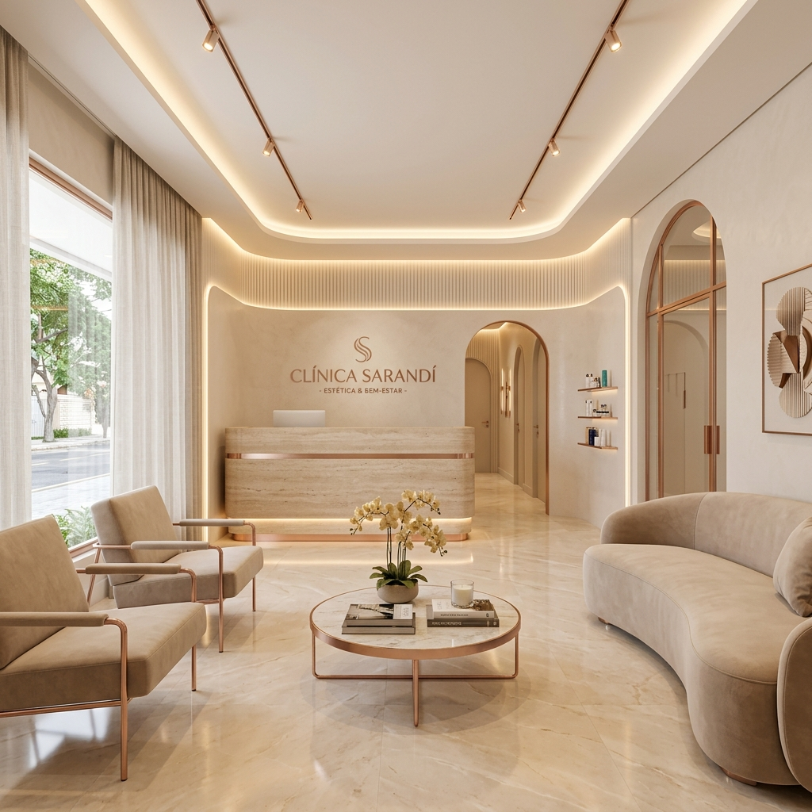
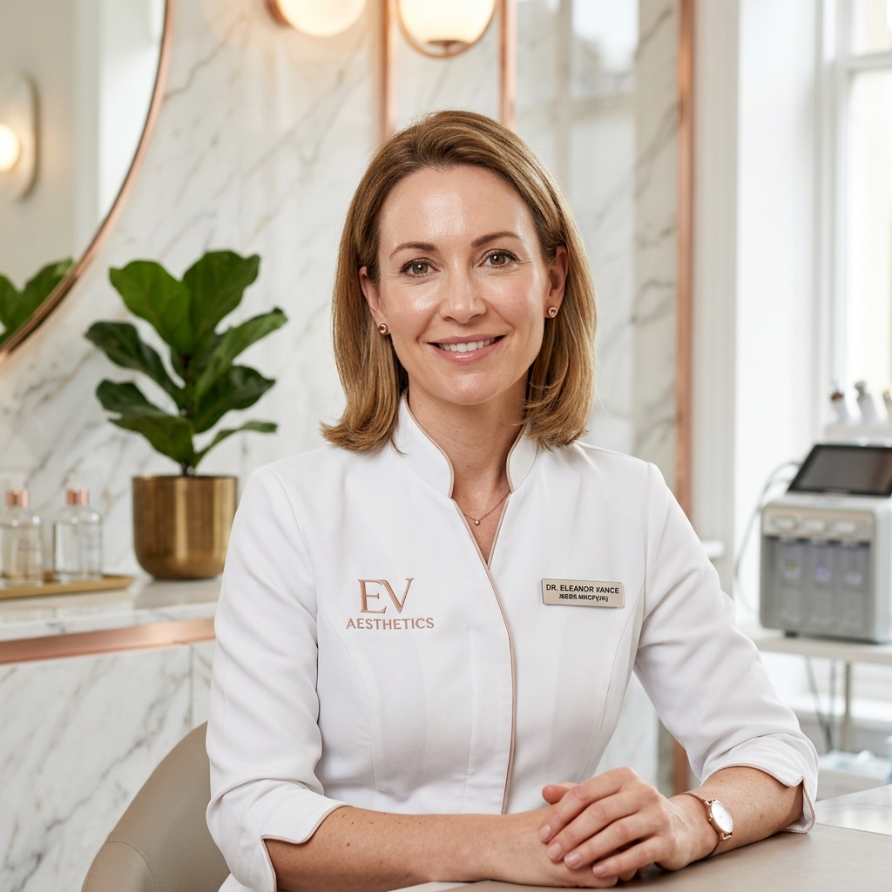

Procedimentos avançados e não cirúrgicos na Reisclinic para esculpir seus traços e harmonizar sua autoestima em Sarandi/PR.

Ambiente clínico de alta performance e rigor científico sob cuidados médicos.
Técnicas inovadoras e não-invasivas que dispensam internação e cortes.
Harmonia perfeita respeitando suas linhas e proporções naturais únicas.
Diga adeus ao incômodo das orelhas proeminentes de forma rápida, indolor e definitiva. Sem cortes, sem pós-operatório complexo.
Procedimento realizado em consultório em aproximadamente 40 a 60 minutos, utilizando anestesia local.
Ao contrário da cirurgia tradicional (otoplastia), você retorna à sua rotina social de imediato.
Técnica moderna baseada em fios tensores de alta resistência e biocompatibilidade garantida.
Realce seus contornos de forma equilibrada. Nossos procedimentos visam recuperar volumes perdidos e valorizar seus pontos fortes de maneira elegante.
Recuperação de volumes faciais perdidos e sustentação dos tecidos. Ideal para desenhar contornos elegantes e definir a mandíbula de maneira natural.
Prevenção e suavização de rugas dinâmicas na testa, glabela (entre as sobrancelhas) e os famosos "pés de galinha". Mantém o olhar descansado e sofisticado.
Estimulação endógena profunda de colágeno de novo tipo. Perfeito para combater a flacidez facial profunda e devolver a espessura e viço da pele jovem.

Fundadora da Reisclinic, a Dra. Gessica construiu sua reputação com base em um atendimento personalizado e uma busca obsessiva por simetria, elegância e naturalidade. Focada no bem-estar integral e no uso das técnicas mais seguras de rejuvenescimento e harmonização, ela já transformou a autoestima de centenas de pacientes em Sarandi e toda a região metropolitana.
"Acredito que a verdadeira beleza não reside em alterar suas características, mas em lapidar seus traços para que sua melhor versão seja revelada com segurança e sofisticação."
Saiba o que dizem aqueles que confiaram a harmonia de seus traços à Dra. Gessica.
"Sempre tive muita vergonha de prender o cabelo por causa das orelhas de abano. A Dra. Gessica realizou minha Otomodelação e em menos de uma hora eu já estava com o resultado definitivo. Sem dor e sem cirurgia! Mudou a minha vida."
"Eu tinha muito medo de ficar artificial com preenchimento facial. A Dra. Gessica foi extremamente cautelosa, me explicou cada passo e fez uma harmonização muito sutil. Todo mundo elogia meu rosto rejuvenescido sem saber exatamente o que fiz!"
"Excelente profissional! Atendimento extremamente humanizado e um espaço sofisticado de muito bom gosto. A Dra. Gessica explica a fisiologia de tudo com muita propriedade técnica, nos dando total segurança. Reisclinic é perfeita!"
Esclarecemos suas dúvidas mais recorrentes sobre a Otomodelação e a Harmonização Orofacial.
O procedimento é realizado sob anestesia local odontológica altamente eficaz. O paciente não sente dor durante a fixação dos fios. O pós-operatório pode apresentar leve sensibilidade nos primeiros 3 dias, que é facilmente controlada com analgésicos comuns receitados pela Dra. Gessica.
Sim. Utilizamos fios cirúrgicos de alta tecnologia e super resistentes que promovem a remodelagem permanente da cartilagem auricular, proporcionando resultados duradouros e estáveis.
Isso depende dos produtos aplicados. Preenchedores com ácido hialurônico duram em média de 12 a 18 meses. A toxina botulínica (Botox) age de 4 a 6 meses. Já os bioestimuladores continuam atuando na estimulação do seu colágeno por até 2 anos.
Nas primeiras 24 a 48 horas, orientamos evitar atividades físicas intensas, evitar massagear ou pressionar as áreas aplicadas, não se deitar de bruços e suspender o uso de cosméticos com ácidos fortes. O uso de protetor solar de alto espectro é sempre obrigatório.
A Reisclinic está estrategicamente localizada em um condomínio executivo premium e seguro no coração de Sarandi/PR, com fácil acesso e estacionamento exclusivo para o seu total conforto e privacidade.